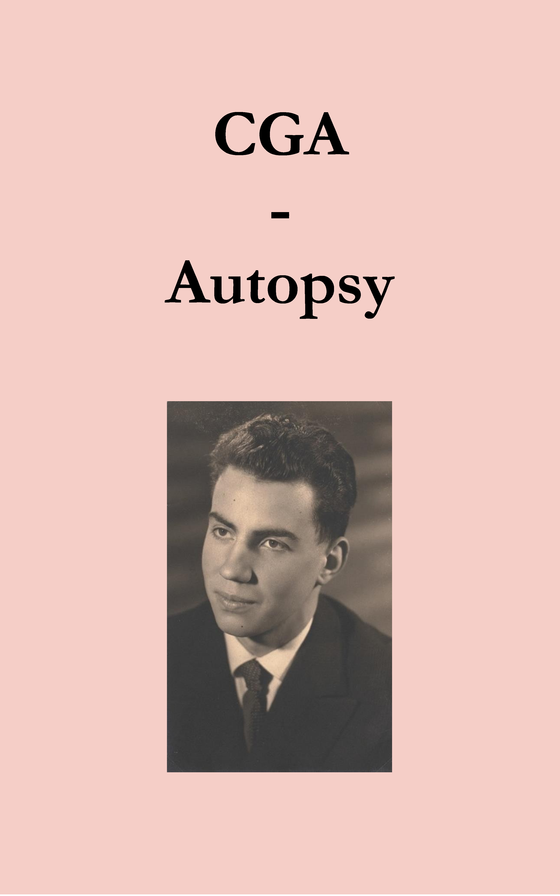

La Collection

CGA - Autopsy
Publié en 2024

Jouer avec les mots
Publié en 2024

Les Chemins de la Mémoire
Publié en 2024
Trois chefs-d'œuvre à explorer.
Mis en page et préface réalisées par Antoine Duchesne, petit-fils de Claude Bouchet.
Publié en 2024
Publié en 2024
Publié en 2024
Bonjour, je suis Antoine Duchesne, le petit-fils maternel de Claude Bouchet.
Ingénieur de formation, je suis animé par une passion pour de nombreux domaines comme le sport et la musique, avec un amour tout particulier pour l'univers de l'art et des livres.
Je suis particulièrement reconnaissant pour tout ce que mon grand-père m'a transmis et continue de m'inspirer. À travers ses relations, il a su transmettre ses passions : son amour de la langue française, son goût prononcé pour l’Histoire, son engouement pour les collections, son engagement écologique, sa sensibilité musicale mais aussi sa rigueur intellectuelle et scientifique, qui sont autant d’atouts précieux.
Son exemple m'a toujours encouragé à viser l’excellence. Mettre en lumière ses écrits est aujourd'hui une immense joie et une façon de partager son talent exceptionnel. J'ai hâte que vous puissiez le découvrir à votre tour à travers ses ouvrages.
Pour toute question, n'hésitez pas à me joindre.